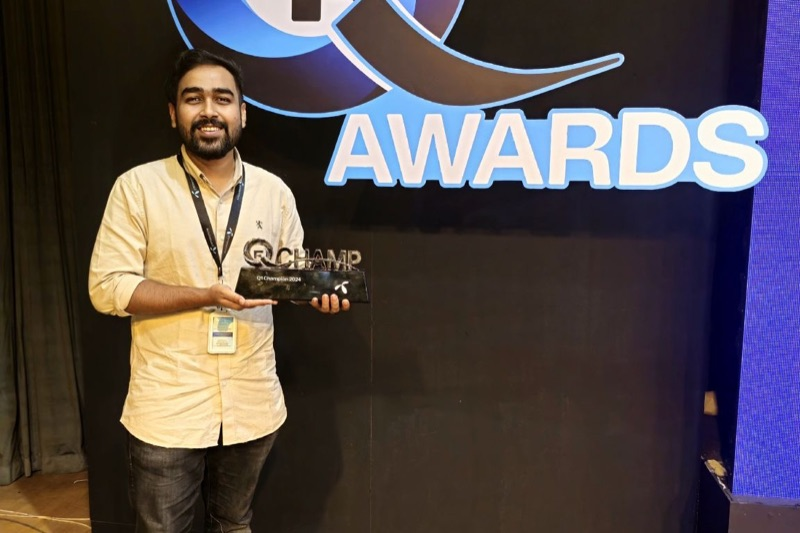
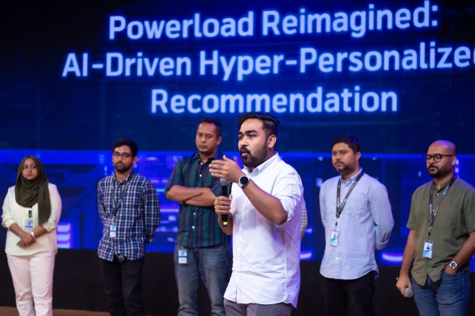

Choosing the next best offer for ~85M subscribers
A deep-learning recommender that picks up to five offers for each subscriber every month, in the self-care app, the retail app, the digital-first sub-brand and SMS channels.
- Scale
- ~85M subscribers scored each month, 150+ behaviour signals, about 20M training samples
- Stack
- Python, TensorFlow, Oracle, SHAP, Qwen2.5-7B served locally with vLLM; Kubernetes, Kubeflow, MLflow
- Shape
- A monthly retraining pipeline whose stages can be run again safely
The problem
Every subscriber used to see the same few promotional offers. With tighter limits on promotional SMS, each message has to fit the person receiving it. That means choosing, for every subscriber, the few packs they are most likely to want next.
What I built
Follow one made-up subscriber, Subscriber A, through the system.
- Gather
Subscriber A's recent usage, spending, top-ups and past purchases are pulled together in the data warehouse.
Feature construction over partitioned Oracle tables
- Shape
Raw numbers become behaviour signals covering usage, revenue, top-ups, handset, location, products and app behaviour.
150+ behavioural KPIs
- Route
Subscribers with a purchase history go to one model. Those without go to another.
Two deep neural networks
- Score
The model gives every pack a probability, and up to five offers are kept.
n-class pack prediction; batched GPU inference
- Deliver
The offers appear in the self-care app, the retail app and the digital-first sub-brand, and go out by SMS, with a small group held back for comparison.
5% control group
- Check
Each month, what was recommended is compared with what people bought.
Monthly in-market back-tests against actual purchases
- Explain
A dashboard shows which signals pushed a pack up or down for a subscriber, in a plain sentence.
SHAP (GradientExplainer); natural-language explanations from the local LLM; model health and attribution dashboard
How I built it
- Two models, not one. Subscribers who have never bought a pack have none of the purchase-history signals the main model leans on. They get their own model with its own inputs.
- Focal loss with square-root-dampened class weights. A few packs outsell the rest many times over, and a plain classifier learns to recommend those to everyone. Focal loss makes the network attend to the rarer packs, and the dampened weights keep that correction from overshooting. Class collapse is detected automatically.
- Stages that can be run again safely. A monthly run at full scale is long, and any stage can fail. Each stage replaces its output instead of adding to it and skips work that is already done, so a failed run restarts from the stage that failed.
- Batched inference on a GPU. The whole base is scored in batches, keeping each subscriber's top offers before moving on.
- Measure more than accuracy. Hit@K and NDCG@K say whether the right pack is near the top. Revenue capture asks whether the model finds high-value packs or only the popular ones.
- Explanations people can read. SHAP shows which signals moved a recommendation. A locally served LLM is given that evidence and turns it into a sentence for the dashboard.
How it was tested
In two layers. Offline, on held-out data, with Hit@K, NDCG@K, revenue capture and automated class-collapse detection. In market, through monthly back-tests against actual purchases with a 5% control group.
My part and the team's
I was the data scientist and named model owner. I built and evaluated the models and the pipeline, and coordinated production and channel execution.
In public


Under the hood
- Framed as n-class pack prediction, with separate models for subscribers with and without purchase history.
- Reproducible monthly retraining at full scale: feature construction, training, batched GPU inference, back-test.
- Part of the personalisation platform on Kubernetes, Kubeflow and MLflow.
- The same approach was extended to a retailer top-up recommender (a multi-class classifier over about 100 features that recommends the top ten offers, rolled out nationally across six regions after three controlled pilots), then to the digital-first sub-brand, the outbound dialler and channel-preference decisioning.
What's next
Weekly scoring in place of monthly, and a two-stage design: will this subscriber buy at all, then which pack.